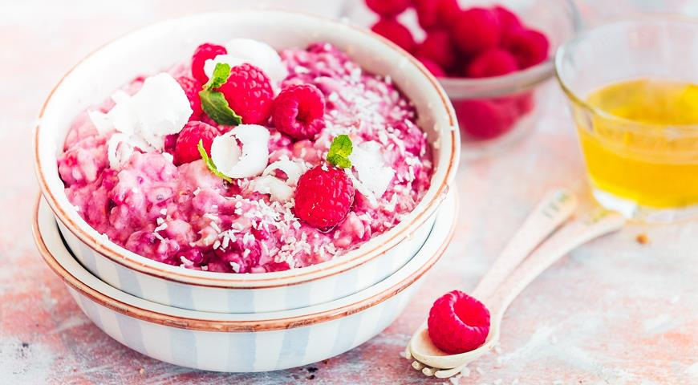

Овсяная каша - это скучно? Как вы ошибаетесь! Добавьте к овсяным хлопьям свежую малину и мякоть кокоса и веселитесь.
Начинайте готовить заранее: мякоть кокоса нарежьте. тонкими ломтиками.
Положите хлопья и кокос в миску, залейте 800 мл холодной питьевой воды.
Накройте крышкой и оставьте на 8–10 ч.
Переложите содержимое миски в кастрюлю и варите кашу на среднем огне,
часто помешивая, до полной готовности, 5–10 мин
Добавьте малину и йогурт. Аккуратно перемешайте и снимите с огня.
Оставьте на 5–7 мин. Разложите по тарелкам, украсьте мятой и малиной